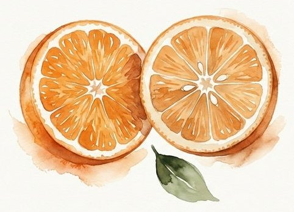
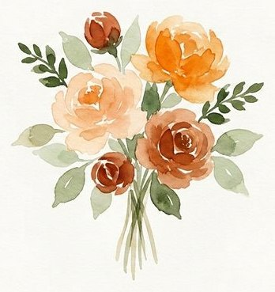
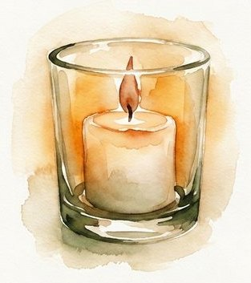

Guillermina & Sebastián · 3 de abril de 2027
Lo que llevamos hecho
Todo dibujado desde cero para tu fiesta. Nada sale de una plantilla. Contame qué te gusta y qué cambiarías.
01
La portada
Ustedes dos frente al lago, al atardecer. La invitación arranca ahí y todavía no dice dónde es — eso se descubre bajando.

02
La paleta y el papel
Naranja, terracota y verde olivo, tomados de tu ambientación. Y el fondo no es un color plano: es cartulina de algodón, como una invitación impresa de verdad.




03
El mapa de La Josefina
Pintado a mano: la Ruta 15, la calle 77, la tranquera, el estacionamiento, el salón, y el altar sobre el pico que entra al lago.

04
Los dibujos se dibujan solos
Esto no es un video ni una imagen: pasa en vivo cuando alguien abre la invitación. La línea se traza sola, y los hielos caen adentro del vaso.
05
Y lo que no se ve
Cada invitado recibe su propio link con su nombre y confirma ahí mismo. Vos entrás a tu panel y ya está armada la lista: quién viene, quién no, a quién le falta contestar, las mesas, quién no come qué y los temas que piden para la noche. La lista para La Josefina sale lista, ordenada por apellido.
¿Vamos por acá?
Decime qué te gusta, qué cambiarías y qué falta. Todavía estamos a tiempo de mover lo que sea.